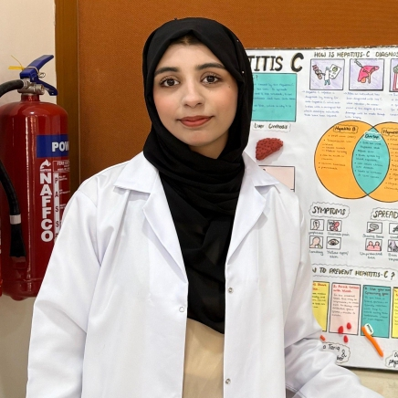
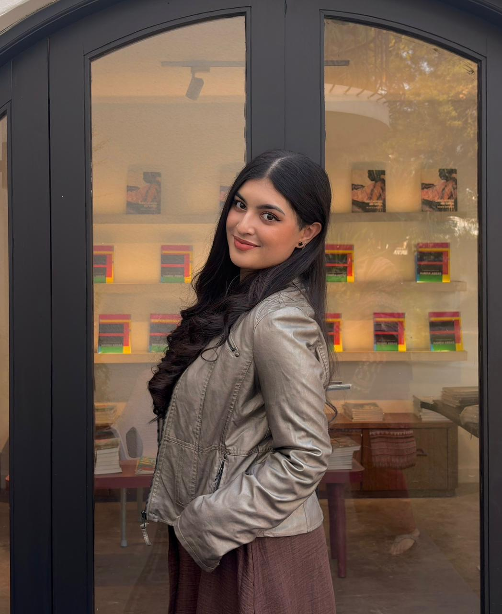
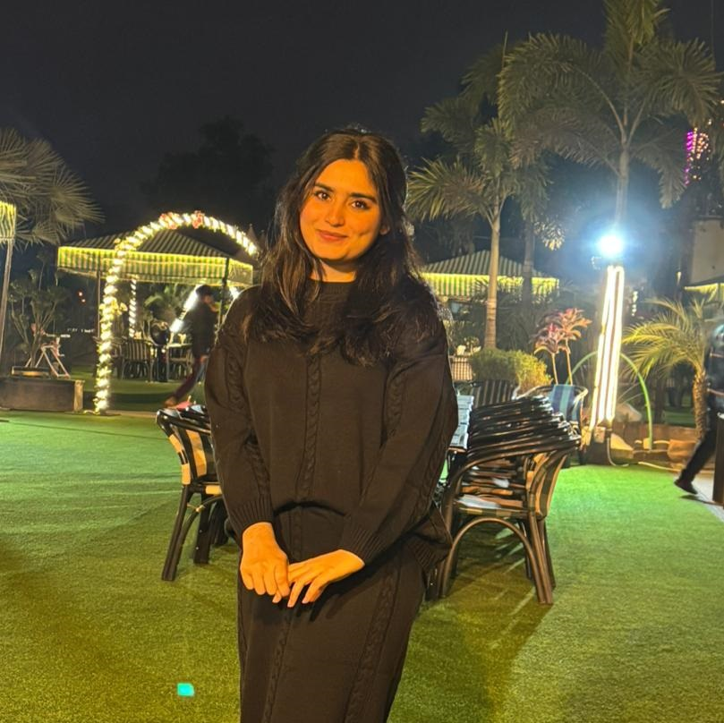
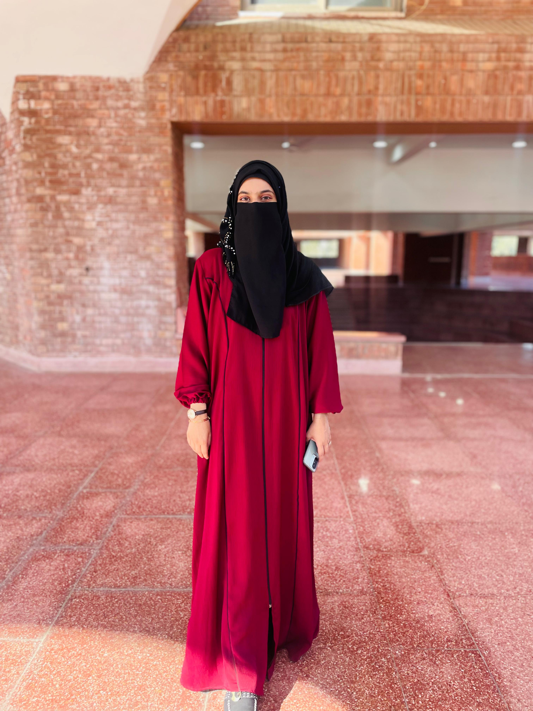

Leading the Way in Advanced Therapeutic Heat Treatment
Combining cutting-edge technology with compassionate care to deliver results that matter.
Our Story
Short Wave Diathermy has been at the forefront of therapeutic heat treatment for over two
decades. Our journey began with a simple mission: to provide effective, non-invasive pain relief
solutions that help people reclaim their quality of life.
Through continuous innovation and dedication to patient care, we have helped thousands of
individuals overcome chronic pain, accelerate recovery from injuries, and improve their overall
well-being. Today, we stand as a trusted name in therapeutic treatment.
Our Mission & Values
To provide accessible, effective, and scientifically-backed therapeutic solutions.
Innovation
We continuously invest in the latest technology and research to ensure our patients receive the
most advanced and effective treatments available.
Patient-Centered
Every patient is unique, and we tailor our treatments to meet individual needs, ensuring
personalized care and optimal outcomes.
Excellence
We maintain the highest standards of quality and safety in all aspects of our practice, from
equipment to patient care protocols.
Our Technology
High-frequency electromagnetic energy for deep tissue heating
⚡
Precise Energy
Electromagnetic waves target specific tissue depths with remarkable accuracy.
🎯
Controlled Heating
Advanced controls ensure safe and effective therapeutic temperatures.
🔬
Scientific Validation
Backed by decades of clinical research and proven therapeutic outcomes.
✨
Comfortable
Non-invasive and pleasant experience with no recovery time needed.
Why Choose Us?
Real results backed by experience
20+
Years of Experience
Proven track record in treatment
10K+
Patients Treated
Thousands of successful outcomes
95%
Success Rate
High patient satisfaction
100%
Safe & Non-Invasive
No surgery, no needles
Our Medical Team
Meet the experts dedicated to your recovery

Dr. Safia Tariq
Chief PhysiotherapistPT, DPT, 15+ years experience
"Short wave diathermy represents one of the most effective modalities for deep tissue healing in modern physiotherapy. It is the cornerstone of our pain management protocols."

Dr. Meerab Baber
Senior Physical TherapistPT, MS, Sports Medicine Specialist
"As a Doctor of Physical Therapy (DPT) student, my journey into rehabilitation sciences has been driven by curiosity, compassion, and a deep respect for the body's ability to heal. I have always been fascinated by how evidence-based interventions can restore movement, relieve pain, and improve quality of life. Clinical Shortwave Diathermy, in particular, represents the perfect blend of science and care using therapeutic heat to promote tissue healing, reduce inflammation, and enhance recovery.
Through my academic training and clinical exposure, I have learned that physiotherapy is not just about techniques or machines; it is about understanding the patient as a whole. Every modality, including shortwave diathermy, must be applied with clinical reasoning, safety awareness, and individualized planning. I value precision, ethical practice, and patient education, ensuring that every treatment is both effective and empowering.
My goal as a future physiotherapist is to combine modern technology with compassionate care. I believe that modalities like shortwave diathermy are powerful tools when integrated into a comprehensive rehabilitation plan that includes exercise therapy and functional training.
I am committed to continuous learning, staying updated with advancements in physiotherapy, and refining my clinical skills. For me, physiotherapy is more than a profession — it is a responsibility to help individuals regain confidence in their movement and independence in their lives."

Dr. Aden Rubab
Rehabilitation SpecialistPT, PhD, Clinical Research
"As a Doctor of Physical Therapy student, I am passionate about rehabilitation and helping people recover from pain, injury, and disability. I chose this field because I am curious about how the human body moves and how therapy can improve daily life. I believe a good therapist must be kind, patient, and knowledgeable, and I try to develop these qualities through my studies and clinical practice.
During my DPT training, I have learned important skills such as patient assessment, exercise prescription, manual therapy basics, and the safe use of therapeutic modalities. I understand the importance of evidence based practice and individualized treatment planning for every patient. I also learned how communication, motivation, and patient education play a key role in successful rehabilitation outcomes.
From the AICT basic level course, I learned how artificial intelligence can support healthcare and education. I understood basic AI concepts, digital tools, and how technology can help in clinical research, data analysis, and learning. The course improved my technical skills, problem solving ability, and confidence in using modern technology for academic and clinical tasks.
In the future, I want to combine my DPT knowledge with research and technology to become a competent rehabilitation specialist. My goal is to serve patients with compassion, contribute to clinical research, and continue learning new skills to improve patient care and professional growth. I also learned teamwork, ethics, and time management during my studies, which are important in clinical settings, and I hope to attend workshops and community programs to spread rehabilitation awareness. Through dedication and discipline, I aim to build a strong professional identity, inspire my peers, and represent my university with pride. I believe lifelong learning and empathy will help me deliver safe, effective, and patient centered rehabilitation services in every setting for patients, families, communities across clinical settings."
"Using Short Wave Diathermy (SWD) with manual therapy makes me realize how important it is to think beyond just relieving pain. I understand that effective treatment is not about applying one technique but about preparing the body properly and then using the right methods at the right time. When I learn about how heat therapy relaxes muscles and improves blood flow, I see how this preparation step can make manual therapy more effective and comfortable.
This approach also reflects how I want to grow as a future healthcare professional. I want to develop the habit of planning treatments carefully instead of following routines. Preparing tissues before corrective exercises shows clinical reasoning and patience. It reminds me that small, thoughtful steps can create better and longer-lasting results for patients.
I also realize that combining technology with hands-on skills is very important. Modern equipment like SWD supports the healing process, but manual therapy adds a personal and practical touch. This balance inspires me to value both theoretical knowledge and practical skills in my studies. I want to continue learning deeply so I can apply treatments with confidence and understanding.
Most importantly, this reflection makes me think about patient comfort and long-term recovery. I believe therapy should not only reduce pain temporarily but also improve movement and quality of life. By focusing on proper preparation and structured rehabilitation, I can help patients recover more effectively.
Overall, this topic motivates me to improve myself academically and professionally. It strengthens my belief that careful planning, continuous learning, and a patient-centered mindset are essential for becoming a successful and compassionate healthcare provider."

Dr. Khadija Naveed
Geriatric Care LeadDPT, GCS, Arthritis Specialist
"For our older patients, this non-invasive warmth provides crucial relief for arthritis and joint stiffness, helping them maintain independence and mobility."
"Managing chronic pain requires a multifaceted approach. Deep heat therapy is a safe, drug-free option that provides immediate comfort and long-term relief."
Our Commitment to Excellence
With decades of combined experience, our team is dedicated to providing the highest quality short
wave diathermy treatments. We use state-of-the-art equipment and evidence-based protocols to
ensure optimal outcomes for every patient.
Our facility is equipped with the latest technology in electromagnetic therapy, and our
practitioners undergo continuous education to stay at the forefront of rehabilitation medicine.
Your health and recovery are our top priorities.
Ready to Start Your Healing Journey?
Contact us today to learn more about how Short Wave Diathermy can help you.